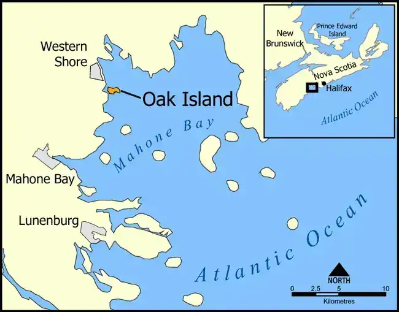

The story
In 1795 a young man named Daniel McGinnis reported a circular depression on Oak Island, Nova Scotia, with a block-and-tackle hanging above it and a sapling at its centre. Digging revealed layers of logs at regular intervals, then a stone slab inscribed with symbols, then — depending on the teller — a platform, a cipher stone, and flood tunnels that fill any shaft with seawater as soon as it is opened.
Maps, diagrams and images


From there the legend assembled its cast: Captain Kidd's hoard, Spanish gold, the lost treasure of the Templars, Francis Bacon's manuscripts proving he wrote Shakespeare, the Holy Grail, the Ark of the Covenant. Every generation of diggers has had a preferred answer, and none has been found.
What the record actually shows
- Nothing has ever been recovered. Not a coin, not a chest, not an inscription verified in situ. The famous "90-foot stone" has never been produced for examination.
- Every generation has destroyed the evidence the next one needed. Shafts were dug, flooded, collapsed, re-dug, and in places dynamited. The original feature is gone.
- The "flood tunnels" have natural explanations. Oak Island is karst-like terrain in a tidal bay; seawater intrusion into excavations is exactly what the geology predicts.
- The finds are ambiguous. Coconut fibre and old wood have been reported and dated to periods earlier than the diggers — interesting, but consistent with shipwreck debris, ballast, or later contamination of disturbed ground.
Because it has the perfect structure for an endless story: a specific place, a promise, a technical puzzle, and a reason why each failure does not count. The money pit is unfalsifiable in practice — every collapse is "the trap working", every empty shaft is "we were close".
Add a reality-television economy that rewards new theories, and you have a machine that has run for two centuries. The Tartaria dossier describes the same engine applied to buildings.
The honest verdict
There may be something buried on Oak Island — people bury things. But the specific claim, that an engineered treasure vault with booby-trapped flood tunnels sits under the island, has had 230 years of testing and produced no treasure, no structure, and no document. Under this archive's standard that is a failed claim, not an open one.
The genuinely interesting history is the digging itself: the companies, the investors, the presidents and actors who bought in, and the way a local story became an industry. That is documented, and it is stranger than the treasure.
Sources for this page
- Wikipedia, “Oak Island” and “Oak Island mystery” — chronology and findsen.wikipedia.org
- Nova Scotia Department of Communities, Culture and Heritage — treasure-trove licencesnovascotia.ca
- Smithsonian Magazine, on the Oak Island searchessmithsonianmag.com
Open resources on this topic
- BookOAK ISLAND MARITIME EVOLUTION THE TRANSITION ERA AND ADVENT OF COPPER HULL SHEATHING ( 1713– 1761) — Jerald Lee Harrah (Internet Archive, free to read)
- BookRevealed, the secret of Oak Island : the definitive explanation for the mystery of the Oak Island treasure! — Johnson, Laverne, 1914- · 1991 (Internet Archive, free to read)
- BookNova Scotia's Oak Island : the world's greatest treasure hunt — Evans, Millie · 1984 (Internet Archive, free to read)
- PapersOpen-access articles: DOAJ · PubMed Central · Internet Archive Scholar
- BooksPublic-domain and borrowable copies: Open Library · Project Gutenberg · Google Books
Cite this page
Momin, S. (2026). Oak Island. The Larger World Archive. https://drsamonline.github.io/LARGE_GLOBE/oak-island.htmlMomin, Sohil. “Oak Island.” The Larger World Archive, 2026, https://drsamonline.github.io/LARGE_GLOBE/oak-island.html.Momin, Sohil. “Oak Island.” The Larger World Archive, 2026. https://drsamonline.github.io/LARGE_GLOBE/oak-island.html.@misc{oak2026oak,
author = {Momin, Sohil},
title = {Oak Island},
year = {2026},
howpublished = {The Larger World Archive},
url = {https://drsamonline.github.io/LARGE_GLOBE/oak-island.html},
note = {Last reviewed 20 November 2026}
}Last reviewed 20 November 2026 · Corrections policy · this page is not peer reviewed